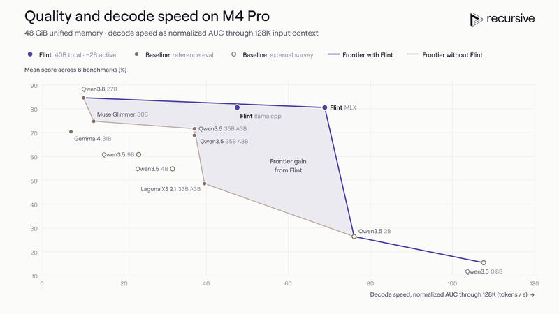
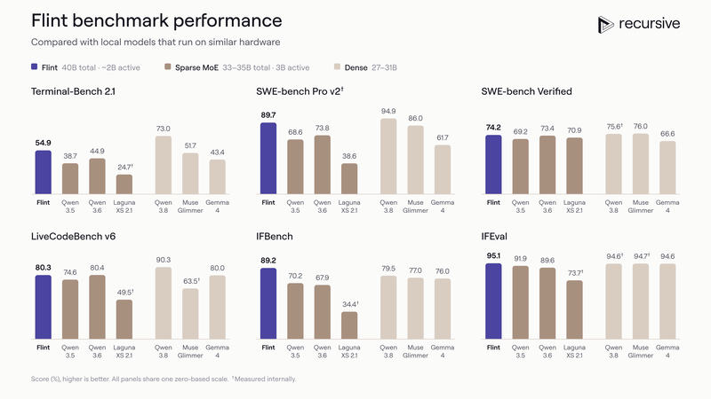
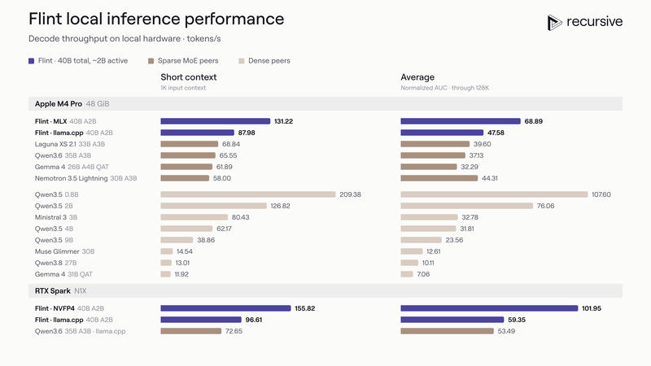

Feature 09 · VERBATIM · 2026 10
Introducing Flint
We’re introducing Recursive Flint, a mixture-of-experts (MoE) model built for fast agentic coding on local hardware. Flint has 40 billion total parameters and activates just 2.5 billion per token. Our small team of people and agents built it from scratch in under four months.

Flint leads MoE models with fewer than 50 billion total parameters on agentic coding benchmarks, including SWE-Bench Pro v2, Terminal-Bench 2.1, and SWE-Bench Verified. It also rivals the coding performance of dense models with 25–40 billion parameters, while running more than five times faster.
With our optimized inference engine, Flint generates more than 125 tokens per second on an M4 Pro MacBook Pro and more than 150 tokens per second on a 64GB NVIDIA RTX Spark at short contexts—up to twice as fast as comparable models.
Building Flint was a practical test of Recursive’s Eureka Machine, our system for large-scale automated AI research and development. Our Eureka Machine helped develop nearly every part of Flint’s model-building stack, from data and training recipes to infrastructure and inference optimization.
Mean score reported across Terminal-Bench 2.1, SWE-Bench Pro v2, SWE-Bench Verified, LiveCodeBench v6, IFBench, and IFEval. Speed: Average tokens/s throughout a 128k-token session. *Muse measured at 124k tokens. Prefill excluded.
State-of-the-art local agentic coding performance

Flint is the best-performing MoE model with fewer than 50 billion total parameters on agentic coding benchmarks. It rivals the strongest dense models of similar total size while running significantly faster.
Sampling parameters across all Flint evaluations: temperature: 1.0, top-p: 0.95, top-k: 20. (1) LiveCodeBench v6 / IFBench / IFEval: single-turn, average pass@1 across 5 attempts. (2) Agentic evaluations: agent timeouts of up to 5 hours, average pass@1 over at least 5 attempts. Terminal-Bench 2.1: Terminus 2 (XML), internet access, solutions obtained through retrieval counted as unsuccessful. SWE-Bench Pro v2 and SWE-Bench Verified: mini-swe-agent, no internet access.
Use Flint as your daily coding model for tasks you want to run locally, without sending your data to a remote server. For complex tasks, break the work into smaller subtasks and provide explicit instructions. While Flint is very capable, it may need more guidance than the larger closed-source coding models you’re used to.
Flint supports context windows of up to 512k tokens. For the best results on coding and other tasks, we recommend staying within 256k tokens.
To turn Flint’s computational efficiency into a faster coding experience, we optimized the entire inference stack—from how its weights are represented to the kernels that execute it on local hardware.
Fast inference on your local AI device

Flint brings strong coding capability to your own hardware, so you can work offline, keep your data on your computer, and avoid API fees.
With our optimized inference engine, Flint runs up to twice as fast as other models in its class on Apple Silicon and NVIDIA RTX Spark. It is also more than five times faster than dense models with 25–40 billion parameters that achieve similar coding benchmark scores.
How we built Flint with automated research
Recursive’s Eureka Machine automates the full research loop: proposing ideas, implementing them, testing them, and using the results to decide what to try next. It explores multiple directions in parallel, builds on earlier experiments, and combines promising ideas. Our earlier blog post describes the system and its results on our initial test problems.
Our Eureka Machine contributed throughout Flint’s development, from data, optimizers, and training recipes to infrastructure and inference performance. Its discoveries helped our small team build Flint from scratch and reach state-of-the-art results on our target benchmarks in under four months.
Flint’s local inference speed illustrates how these contributions compound across the model-building stack.
Architecture. We started by searching for an architecture that would improve throughput on local hardware by activating fewer parameters per token. Starting from a baseline with 35 billion total parameters and 3 billion active parameters, our Eureka Machine explored different expert configurations and widths. The resulting Flint architecture—40 billion total parameters, with 2.5 billion active per token—was projected to offer the best combination of speed and coding performance among the configurations our Eureka Machine tested.
Quantization. After training, our Eureka Machine searched for quantization recipes that shrink Flint’s memory footprint while preserving its capabilities. Against common practice, it quantized the output layer (lm_head) to 4 bits. Because Flint has only 2.5 billion active parameters, its output layer is a large share of the weights read for each token. To recover accuracy, it added an offline distillation stage in which the quantized model trains on its own pre-sampled responses from a self-discovered coreset, with the 16-bit model as teacher. This nearly halved the number of training steps compared with our quantization-aware training baseline. The final NVFP4 model scores within 0.7 points of the 16-bit model across our benchmarks.
Kernels. Our Eureka Machine then optimized how the quantized model runs on Apple Silicon and NVIDIA RTX Spark. It produced specialized kernels for low-bit projections, MoE operations, attention, and prompt processing, tailored to the model and hardware. On M4 and M5 chips, it produced a Metal megakernel that fuses the entire decode forward pass.
Flint’s inference speed is one example of how our Eureka Machine’s improvements build on one another. We applied the same approach throughout development, combining discoveries across data, training, and infrastructure to improve the final model.
Running Flint
Flint’s weights are available on Hugging Face under the Apache 2.0 license. Download the model, run it locally with your data kept on your device, and adapt it for your own applications.
Flint works with tools and frameworks including llama.cpp, Ollama, Unsloth, LM Studio, vLLM, and SGLang. We’re also releasing rec, a lightweight inference engine optimized for Flint on M4 Pro and M5 Pro/Max, with a simple setup to get you running quickly.
See our documentation for setup instructions and examples.
What’s next
Our goal at Recursive is to build recursively self-improving superintelligence to automate knowledge discovery. We’re starting with model development: building a research process that improves with each model it produces.
Flint is our starting point. Our small team built it from scratch in under four months, with Eureka Machine proposing ideas, implementing them, and testing whether they worked across the model-building stack.
Our bet is that more capable models can make Eureka Machine a better researcher, helping us build the next generation faster and deliver more capability for the same cost. That work will include increasingly capable local models and the infrastructure to run them, as part of a broader effort to advance AI research and development.
If you want to help build this future, join us!